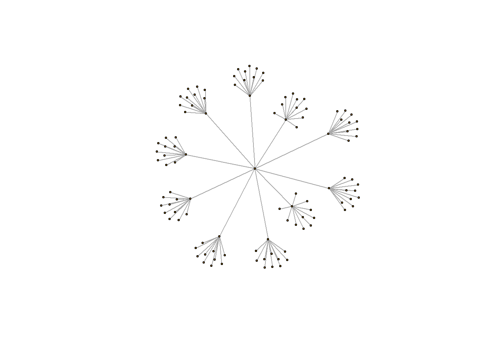
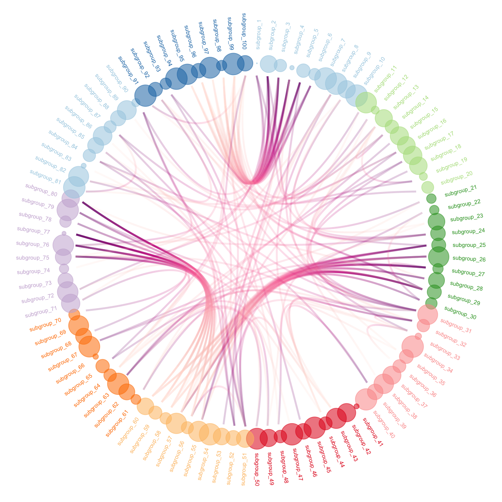

Show/Hide Code
library(ggraph) # 绘制网络图
library(igraph) # 处理网络图Quarto 渲染有bug，可以阅读:
https://r-graph-gallery.com/hierarchical-edge-bundling.html
library(ggraph) # 绘制网络图
library(igraph) # 处理网络图两种数据格式：

# 创建一个数据框，给出个体层次结构。
# 原点在最上面，然后是组，然后是子组
d1 <- data.frame(
from = "origin",
to = paste("group", seq(1, 10), sep = "")
)
d2 <- data.frame(
from = rep(d1$to, each = 10),
to = paste("subgroup", seq(1, 100), sep = "_")
)
# 合并数据框
hierarchy <- rbind(d1, d2)
# 创建一个顶点数据框。每个对象一行，给出节点的特征。
vertices <- data.frame(
name = unique(c(as.character(hierarchy$from), as.character(hierarchy$to)))
)
# 创建一个图对象
mygraph <- graph_from_data_frame(hierarchy, vertices = vertices)
# 绘制网络图
plot(mygraph, vertex.label = "", edge.arrow.size = 0, vertex.size = 2)
# 用ggraph绘制网络图
ggraph(mygraph, layout = "dendrogram", circular = FALSE) +
geom_edge_link() + # 线连接
theme_void()
# 用ggraph绘制网络图
ggraph(mygraph, layout = "dendrogram", circular = TRUE) +
geom_edge_diagonal() + # 对角线连接
theme_void()
# left: 连接用直线表示
ggraph(mygraph, layout = "dendrogram", circular = TRUE) +
geom_edge_diagonal(alpha = 0.1) +
geom_conn_bundle(
data = get_con(from = c(18, 20, 30), to = c(19, 50, 70)),
alpha = 1,
width = 1,
colour = "skyblue",
tension = 0
) +
theme_void()
# right: 使用bundle方法（tension = 1）
ggraph(mygraph, layout = "dendrogram", circular = TRUE) +
geom_edge_diagonal(alpha = 0.1) +
geom_conn_bundle(
data = get_con(from = c(18, 20, 30), to = c(19, 50, 70)),
alpha = 1,
width = 1,
colour = "skyblue",
tension = 1
) +
theme_void() 
